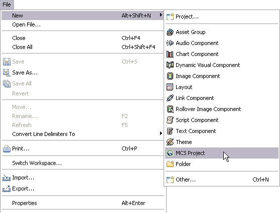

Creating a project
Here are the steps to create the welcome project in Eclipse.
Usually you will create the policy directories in Eclipse. However, this time you will start
with the project resources and XDIME 2 files that come with Volantis Mobility Server.
By default the policies are stored in the WebContent/mcs-policies
directory created by the MCS Project wizard. Our layouts and theme
policies are placed in that location. An additional folder, stores all image component
policies.
Creating a project 
- Choose the File | New | Project
- Pick MCS Project from the list of available wizards. If you cannot see
this entry in the menu, navigate instead to Other and then
MCS and then MCS Project.
- Then click the Next button

- Name the project 'welcome' and uncheck the Use default location
option
- Browse to webapps/mcs/projects/welcome in your
Tomcat installation
- Click the Next button
- Now you need to provide the location of the device repository. Click the
Browse button and navigate to the repository file in your installation
MCS/repository/devicerepository/devices.mdpr.
- Click the Finish button to complete